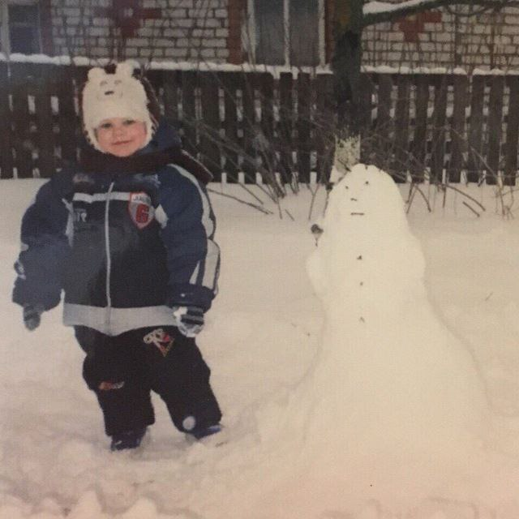
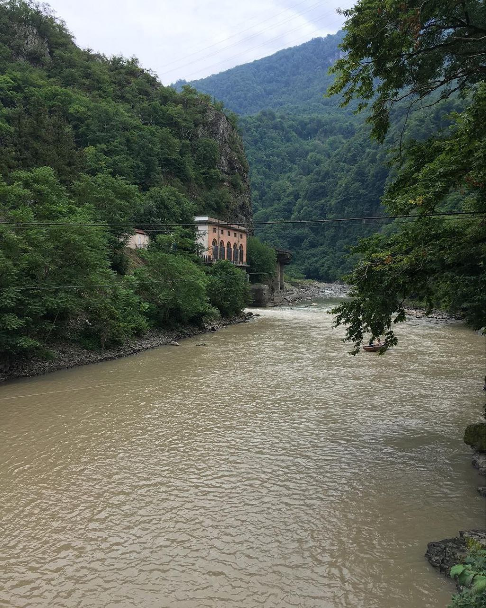
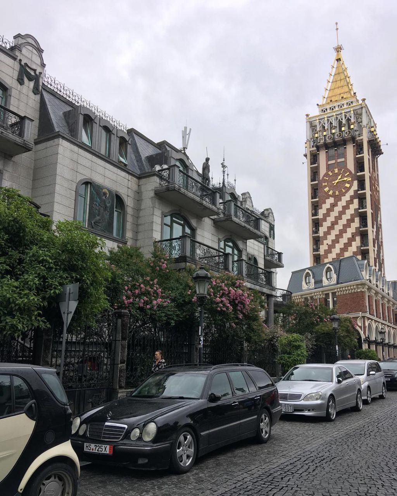
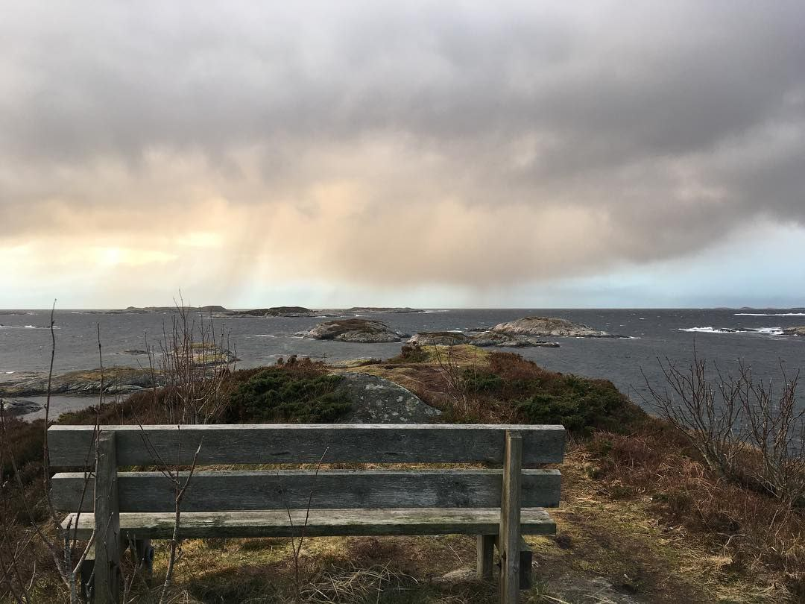
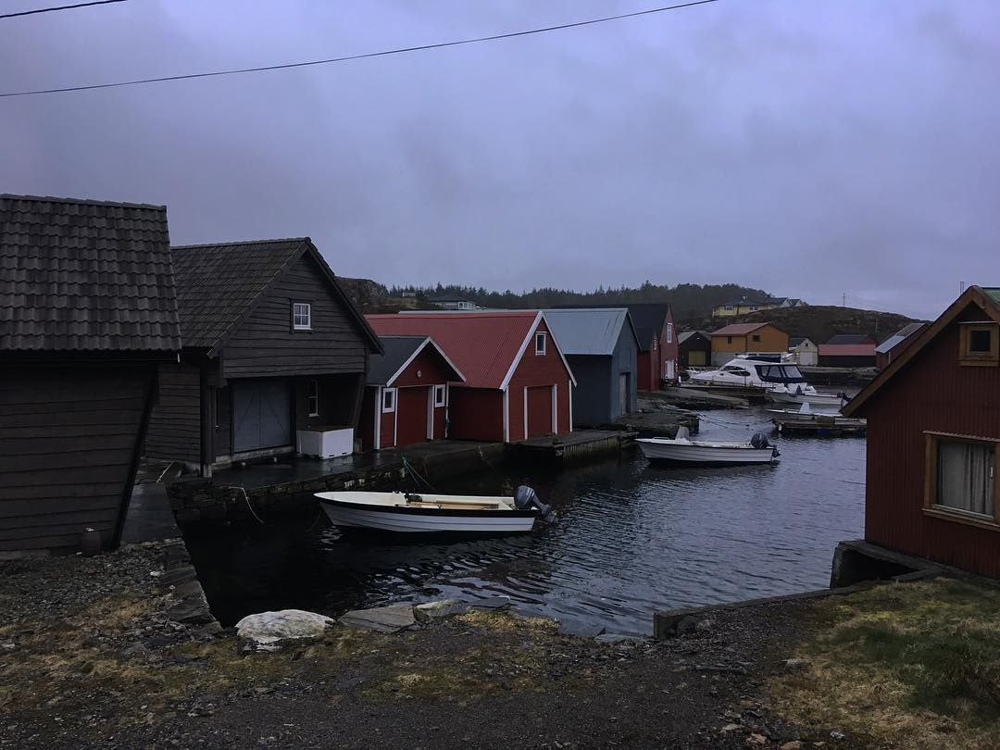
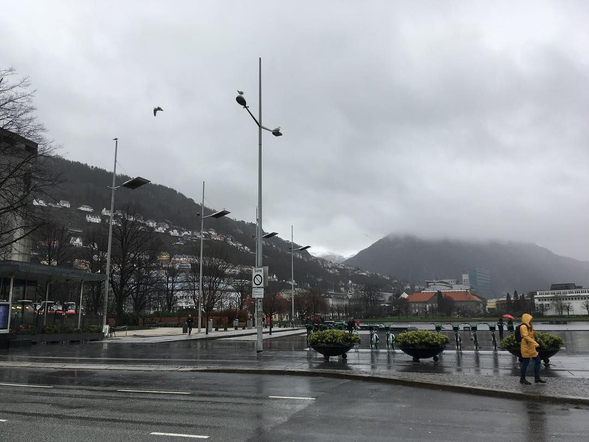

Привет! Я бэкенд-разработчик, пишу на PHP и увлекаюсь саморазвитием, путешествиями и спортом

Путешествия





Берген — город, который захватывает дух своей живописностью. Я был здесь и остался под большим впечатлением от уникальной природы, гармонии фьордов и гор. Городские виды здесь переплетаются с суровой северной природой, и от этого Берген кажется настоящей норвежской сказкой.
Здесь чувствуешь, что природа — мощный источник вдохновения, она помогает задуматься о важных вещах.
Батуми поразил меня своей атмосферой свободы и теплом, присущим гостеприимной Грузии. Здесь сочетание Кавказских гор и Черного моря создаёт невероятные пейзажи, а культура страны не оставляет равнодушным. Этот город — как символ отдыха, яркости и свободы, а также прекрасное место для перезагрузки и новых впечатлений.
Бэкенд-разработка
Я специализируюсь на бэкенд-разработке, в данный момент моим основным языком является PHP, на нем и работаю. До этого был опыт работы с Java, Flutter (Dart).
Фронтенд мне не заходит. Потыкать пораскрашивать кнопочки прикольно, но хотелось бы, чтобы это была разовая акция.
Спорт
Занимаюсь спортом на досуге. Сейчас этому уделяю мало времени, однако если выходит - с удовольствием играю в баскетбол. Имею синий пояс по таэквондо.